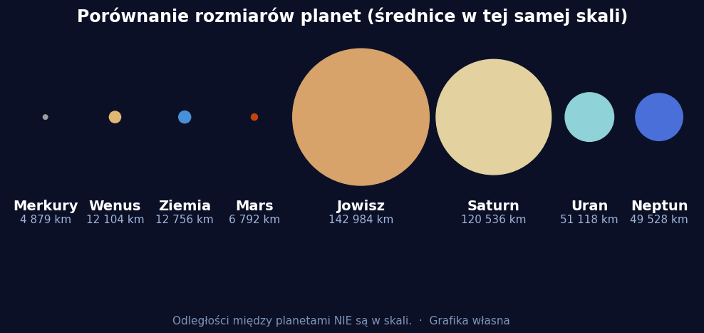
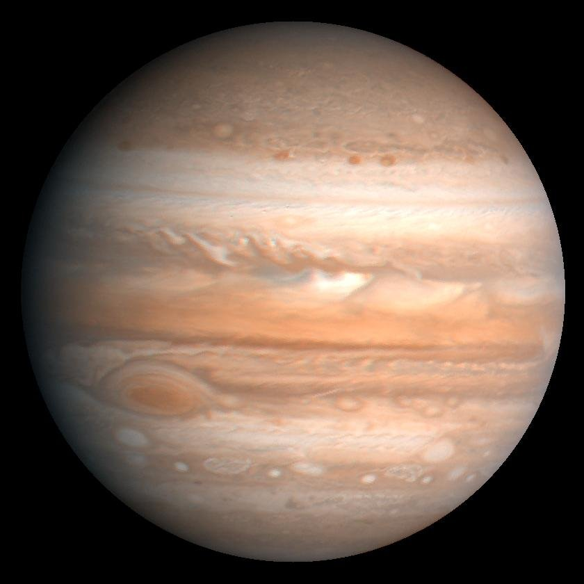
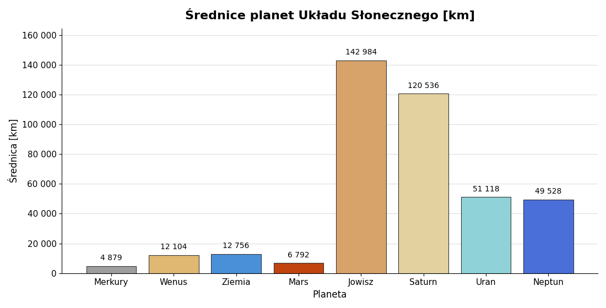

To jest podstrona - osobny plik planety.html, do którego wchodzi się z menu. Z każdej podstrony musi dać się wrócić na stronę główną, dlatego menu jest także tutaj.
Cztery planety najbliżej Słońca - Merkury, Wenus, Ziemia i Mars - są zbudowane ze skał i metali. Mają twardą powierzchnię, po której dałoby się chodzić, i są znacznie mniejsze od olbrzymów.

Grafika 3. Porównanie rozmiarów planet w tej samej skali. Grafika własna. Dobrze widać, że planety skaliste są maleńkie przy olbrzymach.
Cztery dalsze planety są ogromne i nie mają stałej powierzchni. Jowisz i Saturn nazywamy gazowymi olbrzymami, bo składają się głównie z wodoru i helu. Uran i Neptun mają w środku więcej lodu i wody, dlatego mówi się o nich lodowe olbrzymy.

Grafika 4. Jowisz. Autor: NASA/JPL/USGS (zdjęcie PIA00343), domena publiczna - zobacz sekcję „Źródła”.
Dane o planetach zebrałem w arkuszu kalkulacyjnym i tam wykonałem obliczenia. Tę samą tabelę pokazuję niżej na trzy różne sposoby - każdy z nich przyda się w waszych projektach.
Tabelę budujemy znacznikami table, tr, th i td, a jej wygląd ustawiamy w pliku style.css. Dzięki temu pasuje do reszty strony. Minus: liczby trzeba przepisać ręcznie, więc po zmianie w arkuszu trzeba poprawić je także tutaj.
| Planeta | Typ | Średnica [km] | Odległość od Słońca [mln km] | Liczba księżyców | Średnica względem Ziemi |
|---|---|---|---|---|---|
| Merkury | skalista | 4 879 | 57,9 | 0 | 0,38 |
| Wenus | skalista | 12 104 | 108,2 | 0 | 0,95 |
| Ziemia | skalista | 12 756 | 149,6 | 1 | 1,00 |
| Mars | skalista | 6 792 | 227,9 | 2 | 0,53 |
| Jowisz | gazowy olbrzym | 142 984 | 778,6 | 115 | 11,21 |
| Saturn | gazowy olbrzym | 120 536 | 1 433,5 | 293 | 9,45 |
| Uran | lodowy olbrzym | 51 118 | 2 872,5 | 29 | 4,01 |
| Neptun | lodowy olbrzym | 49 528 | 4 495,1 | 16 | 3,88 |
| Razem księżyców | SUMA | - | - | 456 | - |
| Średnia odległość od Słońca | ŚREDNIA | - | 1 265,4 | - | - |
| Największa średnica | MAX | 142 984 | - | - | - |
W arkuszu policzyłem trzy rzeczy, każdą inną formułą:
W Arkuszach Google wybrałem Plik → Pobierz → Strona internetowa. Dostałem gotowy plik HTML, który wrzuciłem do folderu arkusz, i pokazuję go tutaj w okienku. Taki plik wygląda dokładnie jak arkusz - widać nawet litery kolumn i numery wierszy.
Ta tabela ma własny wygląd, pochodzący z arkusza - nasz plik style.css w ogóle jej nie dotyczy. Zawartość okienka to osobny plik i rządzi się własnymi zasadami.
Najprostszy sposób: udostępniamy plik, a kto chce, ten go pobiera i otwiera u siebie. Dopiero wtedy widać formuły i można zmienić dane, żeby sprawdzić, jak przeliczą się wyniki.
Pobierz arkusz z danymi (plik .xlsx)

Grafika 5. Wykres słupkowy średnic planet, zrobiony z danych z tabeli powyżej. Ten sam wykres jest w pliku .xlsx do pobrania.
Wniosek z obliczeń: cztery planety najbliżej Słońca są małe i skaliste, a cztery dalsze to olbrzymy. Jowisz ma średnicę ponad 11 razy większą od Ziemi, a wszystkie planety mają razem 456 księżyców - prawie wszystkie należą do Jowisza i Saturna. Im dalej od Słońca, tym większe odstępy między orbitami: średnia odległość planety od Słońca to aż 1 265,4 mln km.